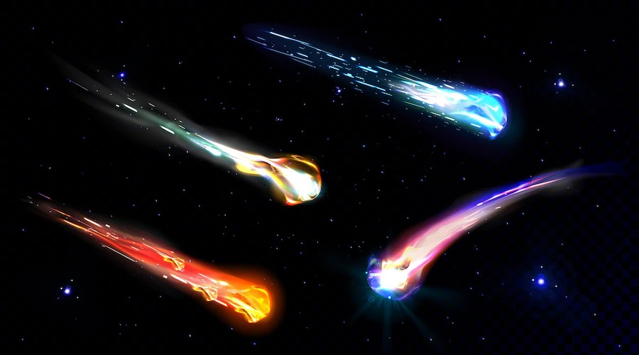
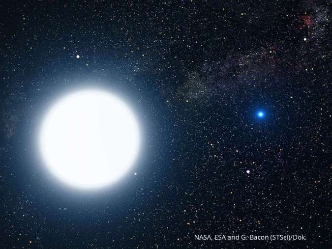
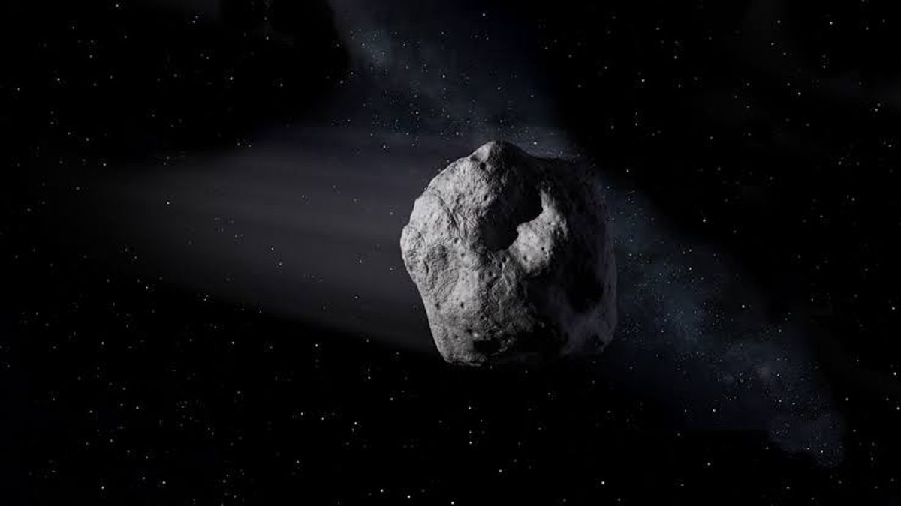

Objek Langit
Sebuah benda yang terbentuk serta bergerak dilangit, mereka terbentuk bisa dari tabrakan antara planet ataupun tragedi yang terjadi diluar angkasa.
Mari kita bahas apa saja objek langit yang ada ditata surya kita, karena alam semesta terlalu luas untuk dibahas semua. Maka kita hanya akan membahas apa saja yang bisa kita cari di Tata Surya kita.
Penjelajah Siapkan diri kalian kita akan mulai berkelana!!
1. Meteorit
Benda langit yang kita bahas pertama ialah meteoroid. Meteoroid merupakan benda-benda langit yang mempunyai ukuran kecil di tata surya, yang ukurannya lebih kecil dibandingkan dengan asteroid, tetapi lebih besar daripada sebuah atom atau molekul. Meteorid yang memasuki atsmosfir disebut denga meteor
2. Bintang
Bintang merupakan sebuah benda langit yang menghasilkan cahaya sendiri melalui proses fusi nuklir atau bisa disebut bintang nyata. Lalu ada yang namanya bintang semu yaitu bintang yang tidak menghasilkan cahaya sendiri, tetapi memantulkan cahaya yang diterima dari bintang lain. Bintang yang paling dekat dengan bumi adalah matahari yang memiliki jarak dengan bumi sejauh 149,680,000 km. Kebanyakan bintang berumur antara 1-10 miliar tahun, namun bintang ada kemungkinan berumur mendekati 13,8 miliar tahun. Semakin tinggi masa sebuah bintang, maka semakin pendek umurnya.
3. Asteroid
Asteroid merupakan sebuah benda langit yang lebih kecil dari pada planet, namun lebih besar lebih besar dari pada meteorid. Asteroid disebut juga planetoid atau planet minor. Dari sekian banyaknya ratusan ribu asteroid di dalam tata surya, dapat ditemukan asteroid sebanyak 13.350 memiliki nama resmi yang diberikan oleh peneliti. Diameter asteroid diperkirakan sekitar lebih dari 1 km dalam sistem tata surya berjumlah 1.1 hingga 1.9 juta.
Lalu ada sebuah bentuk dari kumpulan asteroid yang dinamakan sabuk asteroid, sabuk ini terbentuk dari debu dan batuan yang mengelilingi matahari secara perlahan yang kemudian menyatu tetapi tidak membentuk sebuah planet karena massa dari tiap batuan berbeda. Lalu terbentuknya sabuk ini diakibatkan karena daya tarik gravitasi planet jupiter yang kuat membuat kumpulan batuan ini gagal membentuk planet.